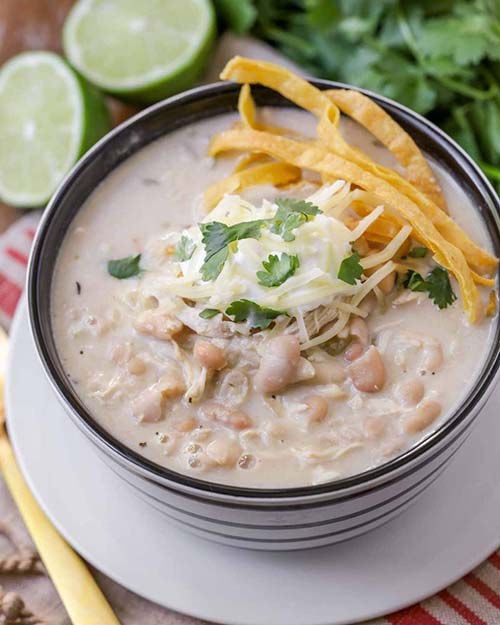

White Chicken Chili

Description
White Chicken Chili is one of mine and my wife's favorite meals to make when the weather starts to cool down
later in the year. We always look forward to soup and chili season!
This meal is great because it's extremely simple to prepare and only takes about 30 minutes to cook. Perfect for
a weeknight dinner!
This recipe is taken from Kristyn
Merkley
Ingredients
- 4 cups chicken broth
- 3-4 (15.5oz) cans Great Northern Beans, drained and rinsed
- 2 cups cooked, shredded chicken
- 1-2 (4oz) cans diced green chiles
- 1 teaspoon ground cumin
- 1/2 teaspoon garlic powder
- 1/2 teaspoon dried oregano
- dash of pepper
- 2 cups shredded Monterey Jack, or Mexican blend cheese
- 1 cup sour cream
Steps
- In a large pot, combine broth, beans, chicken, green chiles, cumin, garlic powder, oregano and pepper over
medium-low heat.
- Simmer for 20-30 minutes, or until soup is heated through.
- Right before serving, add cheese and sour cream and stir until cheese is melted and ingredients are mixed.
Home